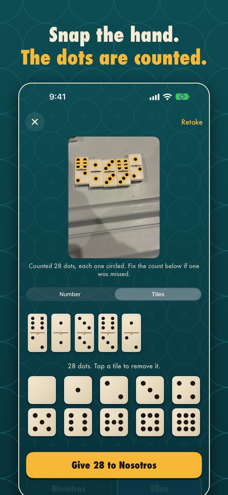
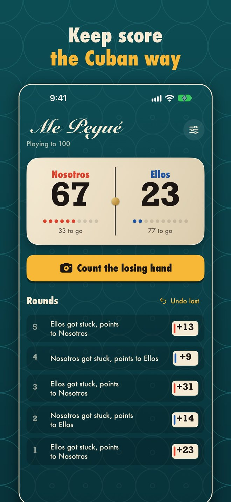
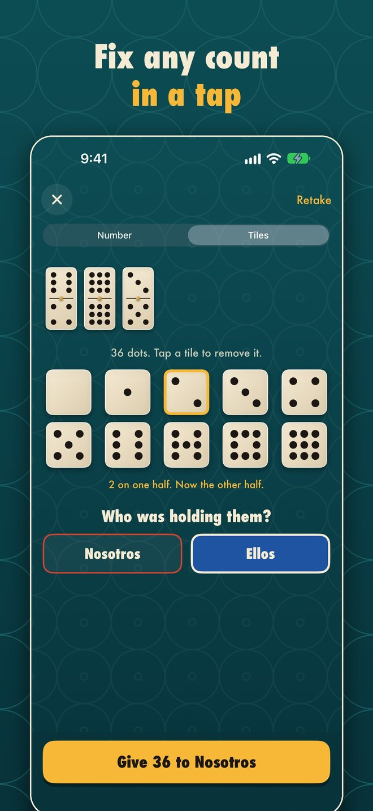
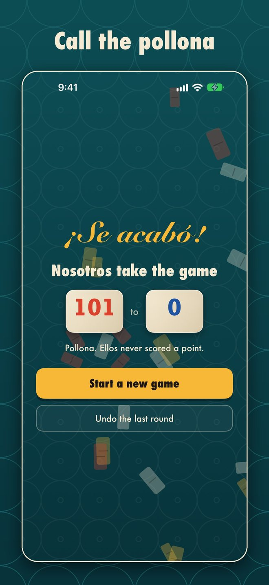

Me Pegué
The domino score keeper that counts the dots for you.
When a hand ends, take a photo of the tiles the losing team is still holding. Me Pegué counts every dot on your phone and gives the points to the other team.
- iPhone
- English and Español
- No account
- Works with no internet
How it works
Photograph the losing hand
Lay the leftover tiles face up and take a photo from straight above.
Check the count
Every dot the app counted is circled on the photo, so a miss is obvious. Fix the number in a tap if it needs it.
Give the points
Pick who was holding the tiles and the points go to the other team.
A look at the app




Made for the domino table
Counts from a photo
Automatic dot counting with computer vision that runs on your phone.
You stay in charge
Correct any count as a number, or by tapping out the tiles left in the hand.
Cuban-style scoring
Two teams, Nosotros and Ellos or any names you like. Play to 100, 150 or 200.
Double-nine and double-six
Works with both sets.
Rounds you can undo
Every round is listed, and the last one can be undone.
Pollona
The app calls it when the other side never scores.
Help and support
Answers to the common questions. If yours isn't here, write to us.
The count is wrong. What do I do?
Tap minus or plus to fix the number, or switch to Tiles and tap out the tiles in the hand. Nothing is scored until you tap the yellow button.
For the best count: lay the tiles face up, take the photo from straight above, and avoid heavy shadows and blur. Very dark or blurry photos are the ones it gets wrong.
Which domino sets does it work with?
Double-nine and double-six sets with dots.
How do I change the language?
Open settings with the sliders button on the scoreboard and choose English, Español, or the same language as your phone.
How do I fix a score after the round is given?
Tap Undo last to remove the last round, or tap a team's score to type the correct number.
Where are my scores kept?
Only on your phone. There is no account and nothing is uploaded. Deleting the app deletes the scores.
Does it need the internet?
No. Everything, including counting the dots, happens on your phone.
What does "me pegué" mean?
It is what a Cuban player says on playing the last tile and winning the hand.
Contact
Questions, a photo it counted wrong, or an idea? Email mario [at] mariothemaker [dot] com.